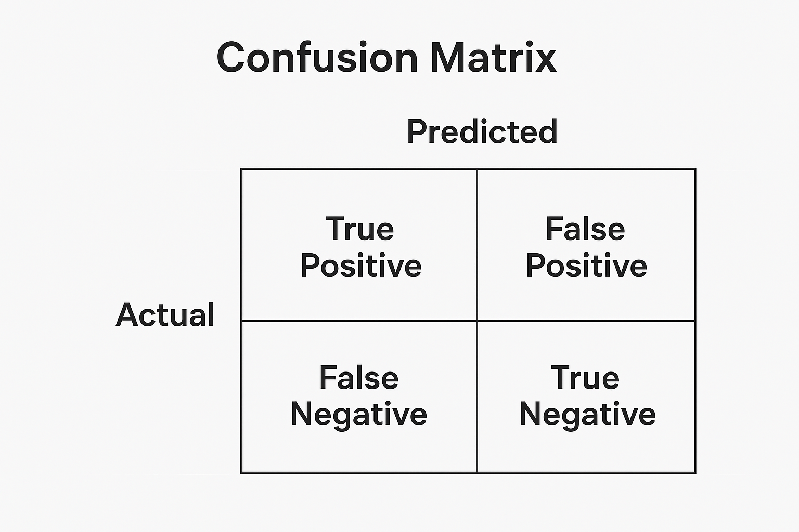

6 Supervised Learning
6.1 Introduction
In computational physics, we often seek to build models that can learn from data. Supervised learning is one of the foundational paradigms in machine learning, in which a model learns to predict an output (label or target) given a set of inputs (features). In essence a model is trained to be able to identify patterns in datasets. If the model is trained successfully it should be able to predict outputs on unseen data.
This part of the course explores how supervised learning is formulated, trained, and evaluated, focusing on applications relevant to physics.
6.2 Training Sets
In supervised learning, the foundation is the training set, a collection of input–output pairs:
\[ \mathcal{D} = \{(\mathbf{x}_i, y_i)\}_{i=1}^N \]
where:
\[
(\mathbf{x}_i \in \mathbb{R}^d)
\]
are feature vectors (inputs), \[
(y_i \in \mathbb{R})
\] are labels (outputs), and
\[
(N)
\] is the total number of samples.
The key goal of supervised learning is to learn a mapping: \[ (f: \mathbf{x} \rightarrow y) \text{such that} (f(\mathbf{x}_i) \approx y_i). \]
The significant point here is that one needs to have a labelled dataset to use supervised learning; each data point needs a corresponding label - a common example of this would be vehicles and vehicle types. The dataset would need to include different types of vehicle, such as motorbikes, cars, vans, lorries - and then each vehicle in the dataset would have a label identifiying its type. The different types of dataset used in supervised learning are covered in the next section.
6.3 Dataset splitting
Generally there are three different types of data that are used in supervised learning. They can all come from the same dataset, but need to be split up in advance as they are used for different parts of the process.
The dataset is usually divided into:
- Training set — used to fit the model parameters and learn the underlying patterns in the data.
- Validation set — used for tuning the hyperparameters of the model.
- Test set — used to evaluate final model performance - should be unbiased.
Typical split ratios: 70% / 15% / 15%, though this does depend on how large the dataset is and the type of problem you are solving. There are techniques that one can use to augment data in the case of smaller datasets - these will be discussed later in the course.
6.4 Models
A model defines the relationship between inputs and outputs. It can be linear or non-linear, depending on the task the network has to perform and the relationship between the features and labels.
The majority of the tasks we will deal with can be separated into either Regression or Classification problems.
Regression is suitable where the output you desire is a number; the most simple example of this would be linear regression. This can also be generalised to N-dimenstional inputs.
Classification is suitable where you desire the output to be a label. For example, if you are trying to assign the make or model of a car.
6.5 Loss Functions
To quantify how well a model performs, we define a loss function \((L(y, f(\mathbf{x})))\) that measures the discrepancy between predicted and true values. This is a critical concept in machine learning as it effectively quantifies how good a given prediction is. In supervised learning, the loss is based on the difference between the prediction for a given input and the known truth, also called ground truth.
Within regression problems commonly used loss functions are Mean Squared Error and Mean Absolute Error.
MSE: \[ \frac{1}{n{}} \sum^{n}_{i=1}(y_i-\hat{y}_i)^2. \] MAE: \[ \frac{1}{n{}} \sum^{n}_{i=1}|y_i-\hat{y}_i|. \]
For classification problems we predict a probability of obtaining the classification. In essence a value between 0 and 1 is obtained, with 0.5 implying there is the maximum uncertainty associated with the classification. This uncertainty can also be thought of as entropy within the model. A commonly used loss function in classification is the Binary Cross-Entropy, which measures the distance between the prediction and the true label.
\[ -\frac{1}{n{}} \sum^{n}_{i=0}y_i \ln \hat{P}_i + (1-y_i) \ln(1-\hat P_i). \]
This loss function will penalise predictions which are wrong while also penalising predictions which are not confident.
6.6 Optimisation
We have covered how to split datasets, train models and the definition of loss functions; the next step is understanding how to adjust model parameters such that the loss is minimised. A technique for achieving this is to compute the derivative of the loss, with respect to the model parameters, and then to iterate with this procedure until a minimum is found. The technique is called Gradient Descent, and can be described mathematically as:
\[ \theta_{i+1} = \theta_i - \eta \Delta L(\theta_i) \]
where \(\theta_i\) are the current set of parameters, \(\Delta L(\theta_i)\) is the gradient of the loss and \(\eta\) is a parameter which controls the size of the steps through which each iteration differs from the previous; this is also known as the Learning Rate.
Standard gradient descent uses the entire dataset when calculating the loss and is therefore computationally expensive and can take a long time to converge. An alternative method, Stochastic gradient descent, uses only a small subset of the data to calculate the loss, and is therefore more efficient and scalable to large datasets. However due to randomly sampling datapoints to calculate the loss, it can be a more erratic process.
6.7 Boosted Decision Tree
Decision trees are flowchart-like structures originally invented to help with decision making processes. At each step in the tree the sample is split accordiing to some criterion and at the end of the tree, the events in the sub-sample are assigned a prediction.
To create a decision tree you decide on a set of rules that will aid in your classification or regression task. At each step, or node, there should a specific rule on how to split the dataset - domain knowledge on how well the split divdes your dataset between the classes is particularly important. The final nodes are called leaves and rules need to be in place to also decide when to create these leaves. Typically this depends on the sample size, sample purity, among other factors. The prediction assigned to a leaf node is obtained from the sample it contains.
The “boosting” aspect of this approach comes in when attempting to improve the performance of the tree. As single decision trees can be prone to overfitting (discussed further in these notes), they can often perform poorly on unseen data. As such, “boosting” is the technique of using multiple “weak” or “shallow” trees together sequentially as an “ensemble”. The later trees focus on the areas where the earlier trees had misclassifications or high degrees of uncertainty. The models are trained iteratively, with the gradient of the loss used to guide the new model. When training a boosted decision tree, the prediction assigned to a leaf node is the residual (averaged over the sample in the leaf node) based on the prediction of all previous trees. This is then multiplied by a factor, which is the learning rate. The BDTs produce a score for each input data point and, in the case of classifciation, we can assign a probability that an event is a particular class.
6.8 BDT Classifier Performance
Individual events can be classified by considering the distributions of scores and then assigning a threshold to a particular class. Above this threshold defines one class, and below another class. Given a threshold we can then compute specific metrics to assess the performance of our classifier, assuming we have two classes to select between, class A and B:
\[ \textnormal{True positive rate (TPR):} = \frac{N_{identified_A}}{N_{true_A}} \]
\[ \textnormal{True negative rate (TNR):} = \frac{N_{identified_B}}{N_{true_B}} \]
\[ \textnormal{False positive rate (FPR):} = \frac{N_{identified_A}}{N_{true_B}} \]
\[ \textnormal{False negative rate (TNR):} = \frac{N_{identified_B}}{N_{true_A}} \]
Although these metrics are useful in assessing the various performance characteristics of a model, they are expressed as functions of the BDT output which makes it difficult to compare different models and trainings quickly. Within ML this has been solved by using Receiver Operating Characteristic (ROC) curves; these plot TPR against FPR for a range of different thresholds. One can then intuitively see the trade-off between these characteristics. A random classifier model would exhbit a diagonal straight line from (0,0) to (1,1). The better a model is at classifying, the nearer to the top left of the plot it will be. A perfect classifier will be a vertical line straight up the y-axis to (0,1) and then across to (1,1). This method also has the advantage of directly leading to a single numerical value to measure the performance, the Area Under the Curve (AUC), with a value closer to 1 exhbiting superior classification ability.
Another visual technique for assessing performance for a particular threshold is to build a confusion matrix. This can be especially useful in multi-classifier problems.

The numbers shown are absolute, rather than fractions and so can easily be misinterpreted, care should be taken when drawing conclusions from this method.
6.9 Overfitting/Underfitting
While training a model there is a balance to be struck on several factors, including training time, dataset size, dataset content etc. A common issue which needs to be tackled occurs when when during training a model too closely follows the data. When this happens a model is learning highly specific aspects of the training data and will therefore perform poorly on unseen data. The model is too complex and has typically failed to learn general patters in the data. It can be spotted when considering the loss curves from your training and validation data; the loss curve from the training data will fall smoothly and plateau, whereas the curve from the validation data will typically fall and then start to rise, as the model is not able to generalise well.
Some common techniques to avoid overfitting are to:
- Increase dataset size: gives the model a better change of learning general patterns
- Early stopping: prevent the model learning the data (and noise) too well by stopping the training at an appropriate point as the loss curve plateaus
- Data augmentation: manipulate the dataset with simple transformations to increase dataset size and variation, without changing the core data characteristics
- Regularisation: Adapting loss functions to stay within some defined boundaries (convered in the next section)
Importantly, the reverse of overfitting can also cause problems; if you have a model which has not learned the patterns well enough or is not complex enough to model the data then this will also lead to poor predictions on unseen data. When evaluating the loss curves the training curve will look smoothly falling but the validation curve will remain far from the plateau of the training curve. This can be mitigated by increasing the training duration or decreasing the amount of regularisation applied.
6.10 Regularisation
As models become more complex it becomes increasingly difficult to maintain their ability to generalise to unseen data, while preventing overfitting. Techniques exist to adapt loss functions to help mitigate this, and are called regularisation.
L1 regularisation, also known as LASSO (Least Asbolute Shrinkage and Selection Opertor) adds a penalty term to the loss function which is the absolute sum of the weights. The model is therefore penalised when trying to assign large weights, in some cases down to zero. This leads to a sparser model which is simpler and has less variance. It also helps with feature selection by shrinking down to zero the least important parameters. A loss function for MSE with the added regularisation term is shown below:
\[ \frac{1}{n{}} \sum^{n}_{i=1}(y_i-\hat{y}_i)^2 + \lambda \sum^{n}_{i=1}|w_i| \]
The \(\lambda\) parameter controls the extent to which regularisation is applied by scaling the penalty term; zero would indicate no regularisation.
L2 regularisation, also known as RIDGE regression, is another method which uses the sum of the squared weights as the penalty term. This also shrinks weights down but not to zero. The expression for this is shown below:
\[ \frac{1}{n{}} \sum^{n}_{i=1}(y_i-\hat{y}_i)^2 + \lambda \sum^{n}_{i=1}{w_i}^2 \]
In some cases you may want to shrink some weights down to zero but include the stability of L2 regularisation; elastic net regularisation combines L1 and L2 with an \(\alpha\) parameter to control the balance between them:
\[ \frac{1}{n{}} \sum^{n}_{i=1}(y_i-\hat{y}_i)^2 + \lambda[\alpha \sum^{p}_{j=1}|w_i| + (1-\alpha)\sum^{p}_{j=1}w_j^2] \]